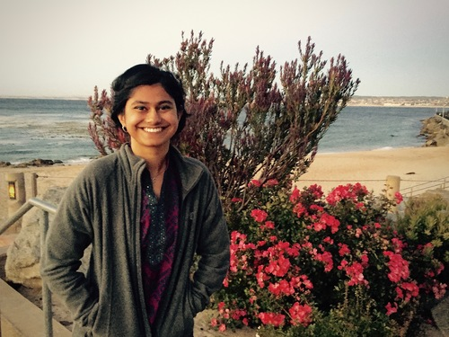

I am a fourth year Ph.D. student advised by Prof. Chris Ré and affiliated with the DAWN, SAIL, and StatML groups. I am supported by the Stanford Graduate Fellowship and the National Science Foundation Graduate Research Fellowship.
My research interests revolve around weak supervision, or using high-level knowledge in the form of noisy labeling sources to efficiently label massive datasets required to train complex models (like here, here, here, and here). This includes using developer exhaust, or byproducts of the data analytics pipeline, to simplify complex statistical and search-based problems. I’m currently exploring systematic ways of debugging machine learning models, especially training data and labels.
My CV is here.
We explore how we can make weak supervision techniques easier to adopt by automating the process of generating noisy labeling heuristics. We introduce a system that takes as input a small, labeled dataset and a larger unlabeled dataset and assigns training labels to the latter automatically. It generates heuristics that each labels only the subset of the data it is accurate for, and iteratively repeats this process until the heuristics together label a large portion of the unlabeled data. We find that this method can outperform weak supervision with user-defined heuristics and crowdsourcing in many cases. [pdf]
Braden Hancock and I explore how we can use natural language explanations for why crowd workers provide the labels they do to label training data more efficiently. We automatically parse these explanations into executable functions and apply them to large amounts of unlabeled data. We find that collecting explanations allows us to build high quality training sets much faster than collecting labels alone. [pdf] [blogpost] [demo video]
We present preliminary methods that use the logs generated while training complex deep learning models to predict the performance of models with different architectures. We find that without training any new models, we can predict how well a model architecture will perform according to different metrics and within training time constraints. [pdf]
We introduce a weak supervision framework to efficiently label image and video training data given a small set of user-defined heuristics. We identify correlations among heuristics using static analysis and incorporate this information into a generative model that can optimally assign probabilistic labels to training data. We apply this method to video querying and medical image classification tasks, outperforming fully supervised models in some cases. [pdf] [blogpost] [video]
We explore how we can find latent subsets in training data that affect the behavior of weak supervision sources. We automatically identify these subsets using disagreements between the discriminative and generative models and correct misspecified generative models accordingly. We improve upon existing relation extraction and sentiment analysis tasks and make these latent subsets interpretable for users. [pdf] [workshop] [blogpost] [video]
Training Classifiers with Natural Language Explanations
Braden Hancock, Paroma Varma, Stephanie Wang, Percy Liang and Christopher Ré.
In Association for Computational Linguistics (ACL), 2018
Exploring the Utility of Developer Exhaust
Jian Zhang, Max Lam, Stephanie Wang, Paroma Varma, Luigi Nardi, Kunle Olukotun and Christopher Ré.
In Workshop on Data Management for End-to-End Machine Learning (DEEM) at SIGMOD, 2018
Inferring Generative Model Structure with Static Analysis
Paroma Varma, Bryan He, Payal Bajaj, Imon Banerjee, Nishith Khandwala, Daniel L. Rubin and Christopher Ré.
In Neural Information Processing Systems (NIPS), 2017
Automated Training Set Generation for Aortic Valve Classification
Vincent Chen, Paroma Varma, Madalina Fiterau, James Priest and Christopher Ré.
In Machine Learning for Health (ML4H), Neural Information Processing Systems (NIPS), 2017
Generating Training Labels for Cardiac Phase-Contrast MRI Images
Vincent Chen, Paroma Varma, Madalina Fiterau, James Priest and Christopher Ré.
In Medical Imaging meets NIPS (MED-NIPS), 2017
Augmenting Generative Models to Incorporate Latent Subsets in Training Data
Paroma Varma, Bryan He, Dan Iter, Peng Xu, Rose Yu, Christopher De Sa, Christopher Ré
Flipper: A Systematic Approach to Debugging Training Sets
Paroma Varma, Dan Iter, Christopher De Sa and Christopher Ré.
In Workshop on Human-In-the-Loop Data Analytics (HILDA) at SIGMOD, 2017
Socratic Learning
Paroma Varma, Rose Yu, Dan Iter, Christopher De Sa, Christopher Ré
In Future of Interactive Learning Machines Workshop (FILM), Neural Information Processing Systems (NIPS), 2016
Efficient 3D Deconvolution Microscopy with Proximal Algorithms
Paroma Varma, Gordon Wetzstein
In Computational Optical Sensing and Imaging, Imaging and Applied Optics, 2016
Nonlinear Optimization Algorithm for Partially Coherent Phase Retrieval and Source Recovery
Jingshan Zhong, Lei Tian, Paroma Varma, Laura Waller
In IEEE Transactions on Computational Imaging, 2016
Source Shape Estimation in Partially Coherent Phase Imaging with Defocused Intensity
Jingshan Zhong, Paroma Varma, Lei Tian, Laura Waller
In Computational Optical Sensing and Imaging, Imaging and Applied Optics, 2015
Design of a Domed LED Illuminator for High-Angle Computational Illumination
Zachary Phillips, Gautam Gunjala, Paroma Varma, Jingshan Zhong, Laura Waller
In Imaging Systems and Applications, 2015
Previously, I worked on problems related to computational imaging. As an undergraduate at UC Berkeley, I studied phase retrieval via partial coherence illumination and digital holography in Prof. Laura Waller’s Computational Imaging Lab. I also rotated with Prof. Gordon Wetzstein’s Computational Imaging Group and looked at solving 3D deconvolution problems more efficiently.
At UC Berkeley, I was a teaching assistant for the first offering of EE16A: Designing Information Devices and Systems and helped develop course material for the class as well. I was also a teaching assistant for EE20: Structure and Interpretation of Signals and Systems.
This page was generated using Jekyll and uses CSS from Kevin Burke. Icons made by Freepik from www.flaticon.com is licensed by CC 3.0 BY